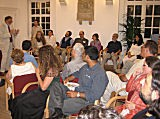

News Archive, 2006
 Conférence sur les Expressions Dévotionnelles des Musulmans de l’Asie du Sud.
Conférence sur les Expressions Dévotionnelles des Musulmans de l’Asie du Sud. Décembre 2006
IIS a accueilli une conférence sur ‘Devotional Expressions of South Asian Muslims’ ‘Les expressions dévotionnelles des musulmans de l’Asie du Sud ‘du 16 au 18 novembre au Centre Ismaili de Londres. Des savants de milieux culturels et universitaires différents ont présenté de nouvelles recherches sur les musulmans de l’Asie du Sud, basées sur des perspectives historiques et contemporaines. Le Professeur Azim Nanji, dans ses observations préliminaires, a souligné la diversité et la richesse de l’expérience des musulmans de l’Asie du sud. Plus
 IIS annonce les lauréats de la bourse PhD 2006
IIS annonce les lauréats de la bourse PhD 2006 Novembre 2006
Depuis 1997, L'Institut des Etudes Ismailies a mis en place des bourses en PhD pour des candidats dont le travail complète les perspectives de recherches et le mandat de IIS. Les lauréats de cette année sont Chiraz Hajiani et Wafi Momin. Plus
 Nouvelle publication de IIS sur l’Essor de l'Etat Fatimide
Nouvelle publication de IIS sur l’Essor de l'Etat Fatimide Novembre 2006
Fondation de l'Etat Fatimide: L'Essor d'un Empire Islamique Précurseur par Hamid Haji est la première traduction complète en anglais du Iftitah al-da‘wa (le commencement de la Mission) par al-Qadi al-Nu‘man, qui était l'un des représentant le plus important de la jurisprudence fatimide et également historien officiel du califat fatimide. Cette publication apporte des clarifications intéressantes sur les conditions sociales et politiques au début du règne des Fatimides. Plus
IIS dirige le programme d'été sur l'Islam à l'université de Mc Gill
Novembre 2006
Le programme d'été sur l'Islam de IIS s’est tenu en août 2006 au campus de l'université de McGill, au coeur de Montréal, au Canada. Les participants de Syrie, de l'Afghanistan, du Pakistan, de l'Inde,du Tadjikistan, du Royaume-Uni, de la Suisse, de la Russie, des Etats-Unies et du Canada ont apporté un mélange social et culturel aux discussions et aux conférences du programme. Plus
Novembre 2006
Le programme d'été sur l'Islam de IIS s’est tenu en août 2006 au campus de l'université de McGill, au coeur de Montréal, au Canada. Les participants de Syrie, de l'Afghanistan, du Pakistan, de l'Inde,du Tadjikistan, du Royaume-Uni, de la Suisse, de la Russie, des Etats-Unies et du Canada ont apporté un mélange social et culturel aux discussions et aux conférences du programme. Plus
IIS souhaite la bienvenue à la promotion 2009
Octobre 2006
IIS accueille 11 nouveaux étudiants, cette année, dans son programme diplômant en études islamiques et humanités (GPISH). La Promotion de 2009 avec des étudiants originaires du Canada, de l’Inde, de l’Iran, du Pakistan, du Portugal, du Tadjikistan et des USA, va entamer pour deux ans des études multidisciplinaires sur la foi, la culture, le langage et les pensées des sociétés musulmanes. Plus
Octobre 2006
IIS accueille 11 nouveaux étudiants, cette année, dans son programme diplômant en études islamiques et humanités (GPISH). La Promotion de 2009 avec des étudiants originaires du Canada, de l’Inde, de l’Iran, du Pakistan, du Portugal, du Tadjikistan et des USA, va entamer pour deux ans des études multidisciplinaires sur la foi, la culture, le langage et les pensées des sociétés musulmanes. Plus
 La Promotion 2008 complète son programme d’immersion en arabe à Damas
La Promotion 2008 complète son programme d’immersion en arabe à Damas Octobre 2006
La Promotion 2008 a passé quatre semaines à Damas cet été pour compléter son immersion en arabe, une partie intégrante du Programme d’études islamiques et humanités de l’Institut. Ce cséjour a donné aux étudiants l’opportunité de mettre en pratique les capacités linguistiques arabes acquises lors de leur première années. Plus
 En Mémoire du Dr Duncan Haldane: 1947-2006
En Mémoire du Dr Duncan Haldane: 1947-2006 Septembre 2006
Le Dr Duncan Haldane, décédé le 22 août 2006 a été Bibliothécaire Principal et Conservateur à l’Institut des Etudes Ismailies de 1997 à 2004. Les représentants de l’Institut se sont joint à la famille Dr Haldane pour une cérémonie à la mémoire du défunt qui s’est tenue le 4 septembre à All Saints’ Church, dans la commune de Putney. Plus
 Nouvelle publication présentant La Spiritualité de Imam ‘Ali
Nouvelle publication présentant La Spiritualité de Imam ‘Ali Septembre 2006
Justice et Mémoire; Présentant la Spiritualité de l’Imam ‘Ali par Reza Shah-Kazemi est une nouvelle publication de l’Institut qui visite les pensées et les enseignements du premier Imam Shi’a, Ali b. Abi Talib, comme un leader moral, éthique et politique. Cette publication fourni la première étude significative sur les enseignements de l’Imam ‘Ali en langue Occidentale. Plus
 Le Professeur Ormsby parle de l’architecture musulmane
Le Professeur Ormsby parle de l’architecture musulmane Septembre 2006
Le 24 juin, le Professeur Eric Ormsby, Bibliothécaire en Chef de l’Institut des Etudes Ismailis, commentait une sélection d’images sur l’architecture musulmane au Musée Victoria et Albert de Londres. Le discours a été prononcé dans le cadre d’une semaine événementielle sur l’architecture, la journée ouverte des ‘V & A et RIBA Study Rooms’, qui fait partie d’une initiative en cours du musée, intitulée ‘Courants Alternatifs: Dialogues dans l’Architecture Islamique’. Plus
 IIS Scholars Present Papers at BRISMES 2006
IIS Scholars Present Papers at BRISMES 2006 Août 2006
Accueillis par le Centre pour les Etudes sur l'Islam et sur les Relations entre les Chrétiens et les Musulmans à Birmingham du 23 au 26 juillet de cette année, le thème de la conférence de BRISMES était "la Foi, la Politique, et les Sociétés dans le Moyen-Orient". Des écrits ont été présentés à la conférence par le DR Alnoor Dhanani, le DR Ali Qutbuddin, et par Salman Alibhai, qui font tous parti de IIS. Plus
IIS Contribue à l’atelier sur l’Interprétation Esotérique du Coran.
Août 2006
La fondation scientifique Européenne (ESF) a accueilli un atelier exploratoire intitulé The Esoteric Interpretation of the Qur’an l’interprétation ésotérique du Coran à l'université de Cambridge du 17 au 20 juillet. L'atelier de quatre jours, organisé et assemblé par le Dr Annabel Keeler, a été conjointement financé par IIS et ESF. IIS a été représenté à cet atelier par le Dr Daftary, Dr Ali Qutbuddin, Dr Feras Hamza, Dr Toby Mayer et le Dr Omar Alí-de-Unzaga. Plus
Août 2006
La fondation scientifique Européenne (ESF) a accueilli un atelier exploratoire intitulé The Esoteric Interpretation of the Qur’an l’interprétation ésotérique du Coran à l'université de Cambridge du 17 au 20 juillet. L'atelier de quatre jours, organisé et assemblé par le Dr Annabel Keeler, a été conjointement financé par IIS et ESF. IIS a été représenté à cet atelier par le Dr Daftary, Dr Ali Qutbuddin, Dr Feras Hamza, Dr Toby Mayer et le Dr Omar Alí-de-Unzaga. Plus
 La nouvelle publication explore l'histoire et la pensée Ismailies au Moyen âge
La nouvelle publication explore l'histoire et la pensée Ismailies au Moyen âge Août 2006
Les Ismailis dans les sociétés musulmanes médiévales est une série d'articles publiés précédemment par Dr Farhad Daftary, qui étudient divers aspects de l'histoire et de la pensée Ismailies au Moyen âge. Elle comprend également un essai précédemment non publié sur " les Ismailis et les études Ismailies ". Des articles relativement courts et parfaitement à la portée de tous, permettent à cette recherche d’être accessible aux lecteurs non-spécialisés dans ce domaine d'étude. Plus
 Un séminaire académique au Portugal pour les anciens élèves de IIS
Un séminaire académique au Portugal pour les anciens élèves de IIS Juillet 2006
Du 23 au 26 juin
-2006714182846_7055.jpg) IIS lance un nouveau site web consacré à ses Anciens Elèves
IIS lance un nouveau site web consacré à ses Anciens Elèves Juillet 2006
Le 14 Juillet 2006, l’IIS a lancé un nouveau site web pour permettre une plus grande collaboration entre ses élèves diplômés et également offrir un espace où les nouvelles spécifiques concernant les anciens élèves, les informations, les évènements marquants et les réalisations personnelles seront affichés et pourront être consultés par l’ensemble de la communauté des anciens élèves, ainsi que par tout autre utilisateur intéressé. Plus
 Les Points Clés du discours du Professeur Nanji prononcé à la conférence de l’Association des étudiants Gujrati.
Les Points Clés du discours du Professeur Nanji prononcé à la conférence de l’Association des étudiants Gujrati. Juin 2006
“Le principe prioritaire sur lequel nous nous sommes tous engagés est de bâtir des traditions intellectuelles ” a partagé le Professeur Azim Nanji, lors de la première, biennale de l’Association des étudiants Gujrati, Gujarat Studies Association (GSA), qui s’est tenue à la School of Oriental and African Studies (SOAS), à Londres, le 19 et 20 mai 2006. Plus
La légende des assassins traduite en portugais
Juin 2006
«As Lendas dos Assassinos», une traduction portugaise de ‘La légende des assassins: Mythes des Ismailis’, a été lancée récemment à Lisbonne. L’auteur, le Dr Farhad Daftary, a participé au processus. Ce premier livre en portugais dans le domaine des études ismailis apporte une introduction à l'histoire des Ismailis et éclaire la fameuse légende des assassins après des siècles d’allégations inexactes. Plus
Juin 2006
«As Lendas dos Assassinos», une traduction portugaise de ‘La légende des assassins: Mythes des Ismailis’, a été lancée récemment à Lisbonne. L’auteur, le Dr Farhad Daftary, a participé au processus. Ce premier livre en portugais dans le domaine des études ismailis apporte une introduction à l'histoire des Ismailis et éclaire la fameuse légende des assassins après des siècles d’allégations inexactes. Plus
Le Directeur de IIS s’exprime à l’Institut Pontifical
Juin 2006
Le «Pontificio Istituto di Studi Arabi E d’Islamistica» (PISAI) à Rome, fait partie des initiatives du Vatican pour promouvoir les études, et les recherches pour une meilleure compréhension du Monde Musulman et des relations entre chrétiens et musulmans. Il organise chaque année, la conférence Bradley, où un eminent chercheur musulman est invité à faire une présentation. Cette année, le principal intervenant était le Directeur de l’Institut des Etudes Ismailies, le Professeur Azim Nanji. Plus
Juin 2006
Le «Pontificio Istituto di Studi Arabi E d’Islamistica» (PISAI) à Rome, fait partie des initiatives du Vatican pour promouvoir les études, et les recherches pour une meilleure compréhension du Monde Musulman et des relations entre chrétiens et musulmans. Il organise chaque année, la conférence Bradley, où un eminent chercheur musulman est invité à faire une présentation. Cette année, le principal intervenant était le Directeur de l’Institut des Etudes Ismailies, le Professeur Azim Nanji. Plus
 IIS lance à Damas un programme préparatoire pour la Syrie
IIS lance à Damas un programme préparatoire pour la Syrie Mai 2006
Ce 9 Mai, vingt étudiants à Damas, en Syrie ont débuté un programme intensif sur neuf mois, un effort de collaboration entre l’Institut des Etudes Ismailies et les Institutions locales ismailies. Ce programme a été établi afin de développer les capacités en ressources humaines en Syrie. Piloté par le Conseil britannique, ce projet met en application un programme d'études conçu par le Département des Etudes Supérieures. Plus
 IIS établit le groupe asiatique de l’Association des Anciens Elèves
IIS établit le groupe asiatique de l’Association des Anciens Elèves Mai 2006
Les anciens élèves de IIS de l’Afrique de l’Est, de Hong Kong, de l’Inde, de l’Iran, du Pakistan, de la Syrie et du Soudan se sont tous réunis pour une première réunion du Groupe Asiatique de l’Association des Anciens Elèves de IIS. La rencontre a eu lieu à Dubaï, UEA, le 22 avril. Les membres éminents de la direction ont également pris part à l’évènement. Plus
 Les étudiants du programme GPISH présentent un article à la Conférence Internationale de la UAE
Les étudiants du programme GPISH présentent un article à la Conférence Internationale de la UAE Mai 2006
Deux étudiantes faisant partie du Programme de Graduation en Etudes Islamiques et Humanités font une présentation à la deuxième Conférence Mondiale des Femmes organisée par l’Université Zayed, à Abu Dhabi, UAE du 12 au 14 Mars. Sehreen Noor Ali Farrah Musani ont présenté un article intitulé “Ismaili Muslim Women as Public Leaders in Canadian Government and Politics”(Les Femmes Musulmanes Ismailis Dirigeantes dans la Politique et dans le Gouvernement Canadiens) comme faisant parti d’une étude sur les femmes et la participation politique.
Plus Les étudiants de IIS visitent des musées à Paris
Les étudiants de IIS visitent des musées à Paris Avril 2006
Les étudiants du Programme de Graduation de l’Institut, accompagnés par le Directeur, Dr Alnoor Dhanani, étaient à Paris le 17 et 18 Mars pour visiter deux expositions dans des musées. Le thème de ces expositions complète leurs cours sur l’histoire islamique en leur apportant une opportunité de développer leurs recherches et apprentissages sur le Monde Musulman, de sa civilisation, de ses contributions et de ses valeurs. Plus
 La Classe 2007 visite l’Alhambra et la Grande Mosquée de Cordoue
La Classe 2007 visite l’Alhambra et la Grande Mosquée de Cordoue Mars 2006
Des Etudiants de la Classe de 2007 du Programme de Graduation en Etudes Islamiques et Humanités de l’Institut ont voyagé en Espagne, en Février pour visiter quelques monuments qu’ils ont étudiés pour leurs cours d’ Architecture Islamique. Le cours professé par le Dr Thalia Kennedy, a exploré les formes, les fonctions et les thèmes se retrouvant dans l’architecture des sociétés Musulmanes. Plus
 Le Professeur Baffioni a présenté à l’Institut le thème de l’Ikhwan al-Safa de Rasa'il
Mars 2006
Le Professeur Baffioni a présenté à l’Institut le thème de l’Ikhwan al-Safa de Rasa'il
Mars 2006 Mars 2006
Le Professeur Carmela Baffioni a présenté lors d’une conférence à l’Institut, le 23 février 2006, le thème de la Prophétie, l’Imamat et les Règles Sapiental dans le Ikhwan al-Safa' Dans le cadre de ses efforts programmatiques, l’Institut parraine des séminaires, conférences et cours publics qui examinent les différentes facettes de études islamiques et thèmes qui se rapportent à la société musulmane contemporaine. Plus
 Promotion 2008: Visite des Musées à Oxford
Promotion 2008: Visite des Musées à Oxford Mars 2006
Les étudiants de la Promotion 2008 du Programme de Graduation de l’Institut en Etudes Islamiques et Humanités visitent le musée des Ashmolean et le musée de Pitt Rivers à l’ Université de Oxford. Ces visites s’inscrivent dans leurs cours d’Anthropologie sur l’ Islam enseigné par le Dr Zulfikar Hirji qui fait également une introduction sur la discipline de l’anthropologie et explore la diversité de l’Islam. Plus
Deux nouvelles publications de IIS
Février 2006
Deux nouvelles publication de IIS ont été publiées en décembre 2005: La première, Approches du Coran dans l’Indonésie Contemporaine, présente un travail d’expertise d’un grand nombre d’intellectuels musulmans d’Indonésie et leurs différentes approches du Coran. L’autre nouveau titre, Le Nid de l’Aigle: Châteaux ismailis en Iran et en Syrie relate le résultat de 40 années de recherche sur l’histoire et les châteaux médiévaux ismailis. Plus
Février 2006
Deux nouvelles publication de IIS ont été publiées en décembre 2005: La première, Approches du Coran dans l’Indonésie Contemporaine, présente un travail d’expertise d’un grand nombre d’intellectuels musulmans d’Indonésie et leurs différentes approches du Coran. L’autre nouveau titre, Le Nid de l’Aigle: Châteaux ismailis en Iran et en Syrie relate le résultat de 40 années de recherche sur l’histoire et les châteaux médiévaux ismailis. Plus
 Entrée
Entrée